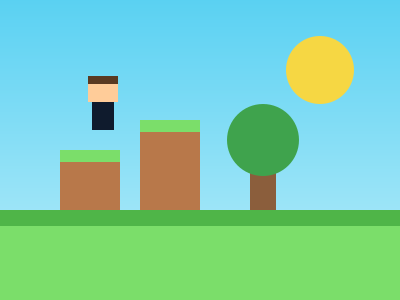

Mi videojuego favorito
Mundo de Bloques
Aventura
Computadora
Para todas las edades
Un juego donde exploras un mundo hecho de bloques, construyes tu casa y descubres cuevas con tus amigos.
Mi calificación
★★★★☆ 4 de 5
Por qué me gusta
- Puedo construir lo que imagino.
- Se juega en equipo.
- Cada partida es distinta.